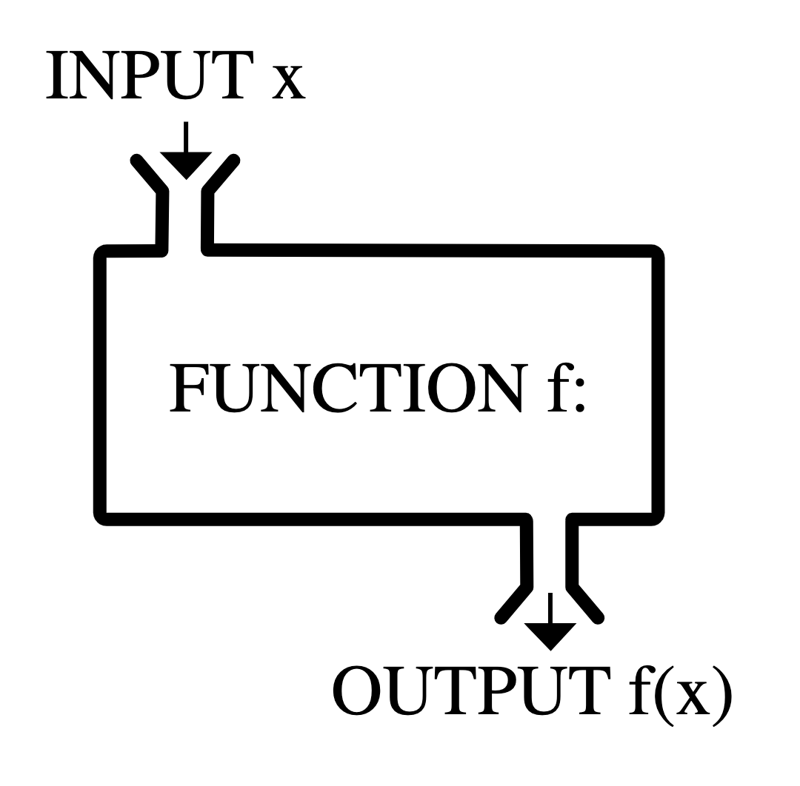
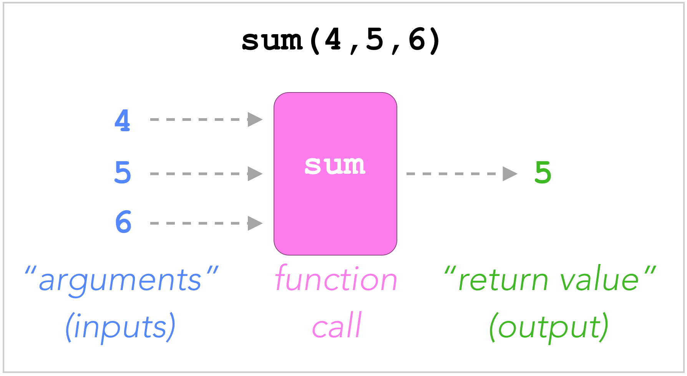
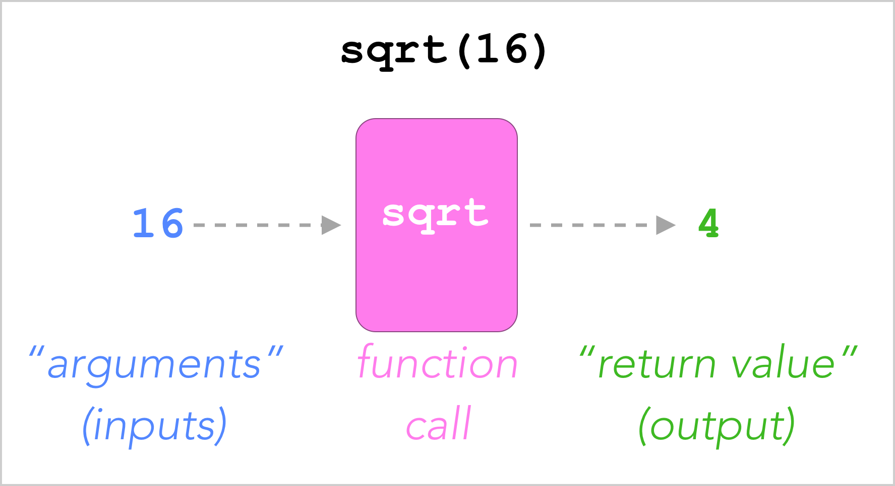
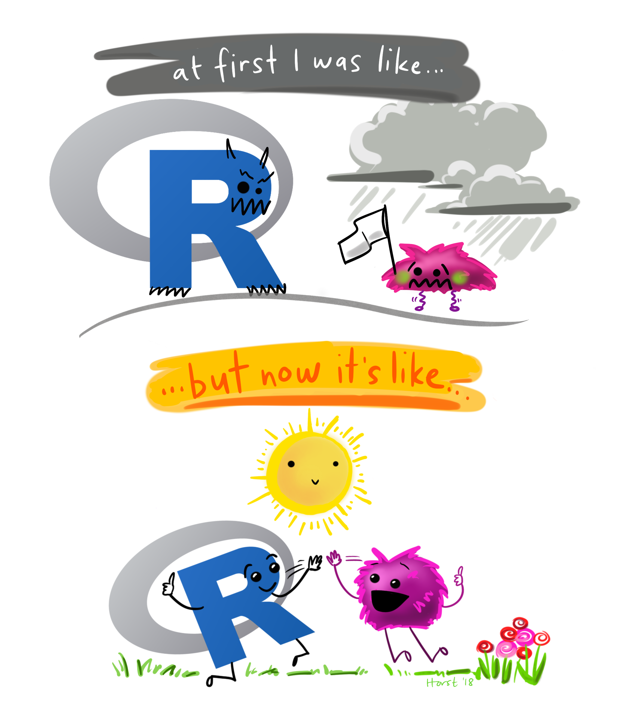

Intro to Coding
Part 3: Getting powerful: functions, vectors, and dataframes
WarningThis page covers…
- function basics
- libraries
- vectors
- data frames
- factors
- more on logicals
Functions: the workhorse of programming
The basics
Functions are like little machines that do specialized things for you. R comes with some of these machines built-in and ready to use. For example:
sumis a basic R function that can add up numbers for you. You can use it over and over with just a few keystrokes.classis another function built into R. You can call it over and over to figure out what type of variables you have.
Under the hood, functions are just code. When you use sum, behind the scenes there’s some R code that runs to get the job done. But you don’t need to see this code: you just want to use it. This is the beauty of functions: they hide unnecessary complexity from you, so you can think about more interesting things.
Struture of a function
Typically, a function is given some inputs, does something with them, and gives an output. It’s the same concept as functions in math (e.g., \(f(x)\)) Perhaps this visual will help:

Functions built-in to R
R comes with some native functions, ready for you to use. An example we’ve already seen is sum. To use sum, you type its name, then an open parenthesis (, then all the inputs you want to give it (separated by commas!) then a closing parenthesis ). Have a look:
Here we have used the function sum and gave it three inputs: 4, 5, and 6. The output was 15.
Below is a diagram of what’s happening:

sum(4, 5, 6) as a diagram
Proper terminology:: In programming, we say that we “called” sum and “passed” it three “arguments”: 4, 5, and 6. Then it “returned” the output, 15.
Try writing a sentence like the one above for the line of code below. (sqrt is a function that takes the square root of a number)
Reveal answer
We called sqrt and passed it one argument: 16. It returned 4.
You could visualize this function as a machine like so:

sqrt(16) as a diagram
sum is unusual in that you can give it as many inputs as you want; we gave it 4, 5, and 6 above, but we could have given it more numbers. By contrast, most functions expect a specific number of inputs – no more, no less. For example, sqrt expects exactly one input. If you pass too few or too many arguments, it will complain. The code below will throw an error (run it):
In this case the error message is actually pretty intuitive. Always read your error messages; even if some of it is gibberish, some will offer you clues.
Using functions in real code
You can use functions in the middle of your commands. R will run the little machines and replace that part of the code with the answer. Like so:
Essentially, R sees the function, runs sqrt(4) first, gets the result (2) and fills that into the command, becoming 7 + 2.
Another example:
Nesting functions: if you follow the logic above closely, you can guess how this code might work:
Here’s how R parses this block:
- We start with the line
x <- 3 + sqrt(sum(4, 5, 7)) - It sees
x <-and knows we are creating a variable calledx, set to whatever is to the right of the arrow<- - To the right, it sees
3 + sqrt(sum(4, 5, 7)) - It wants to add 3 to something, but that “something” is not yet a number.
- It sees the
sqrtfunction. But the arguments inside aren’t ready yet - it sees another function. - It gets to the inner-most bit,
sum(4, 5, 7). This command is run and replaced with the result,16 - Now we have the line,
x <- 3 + sqrt(16) - Now we can do the square root.
sqrt(16)is resolved next (result: 4), leaving usx <- 3 + 4 - It does the
3 + 4math to get 7. - Now we have
x <- 7. Soxis created with the value7. - The next line is a new command:
x + 1 - R recognizes
xas a variable and replaces it with its value,7, to get7 + 1 7 + 1is computed and the final result is shown:8.
In short, nested functions are resolved from the inside out.
Standing on the shoulders of giants (libraries)
“It’s dangerous to go alone – take this!”
You don’t have to reinvent the wheel yourself. There are tons of great coders out there who have written – and freely shared – useful code to do a lot of complicated things. Usually these cool things are packaged as functions. You can use their code and functions by loading their “libraries.”
Basic libraries
At the top of every R file you’ll work on, you’ll write special lines of code that look like: library(tidyverse). These are ways to bring in the good work of others in the R community. Coding is all about not reinventing the wheel, and there are thousands of libraries out there. In this class, we only focus on a few popular ones.
Why do we need libraries?
Consider this problem: you have some data in an excel spreadsheet that you want to analyze. The problem? R does not know how to read spreadsheets by default! There is no function like read_excel in R. If you have some accounting data in a spreadsheet called budget.xls, you couldn’t do this:
read_excel("budget.xls")This would throw an error. Regular old R has no idea what read_excel means. So if you want to load data from excel files for your work, you either you have to figure out how to do that, in code, by yourself… or you can rely on someone who’s already solved that problem for you.
And there is. There’s a library called readxl created by someone in the R community. It’s freely available for everyone to use (most libraries are). When readxl is loaded, it teaches R a bunch of new functions, including one called read_excel.
This code would work:
library(readxl)
read_excel("budget.xls")Once you have run the library(readxl) once, you don’t have to do it again. For the rest of your work, even in other code cells, read_excel will still work. So after running the cell above, later you could do just:
read_excel("new_budget.xls")R has “loaded” all the knowledge from the readxl library into its working memory, and will remember it until you reboot R.
This class’s libraries
For almost everything you do in this class, you’ll need the two libraries: tidyverse and stat20data. In other words, the FIRST cell of code in every file you write should look like this:
library(tidyverse)
library(stat20data)Note: We have already done this for you in this tutorial, so you don’t need to run those lines. But in your normal work, ALWAYS put these two lines, in their own cell, at the top of the file. And RUN THEM.
Loading tidyverse brings in a whole arsenal of useful tools for data science, which you’ll get to know over the next few lessons. The stat20data library gives you access to some ready datasets, stored as variables. For example, the penguins dataset becomes available as a variable once you load stat20data.
Below you can see this in action. We are using a new function, slice_sample, which was brought in as part of tidyverse, and a new variable (penguins) that came with the stat20data library. If we hadn’t loaded those libraries, R would be confused and complain.
We’re getting a little ahead of ourselves, coding-wise, but the code below will show us the first 5 rows of the penguins dataset. You don’t need to follow the code perfectly yet - just notice that we have more words to use (slice_sample and penguins), thanks to our libraries.
Run this:
The takeaway is that libraries make you dramatically more powerful as a coder. Libraries are your best friend.
Containers for things: Vectors and Data Frames
Vectors
Say you want to store the cost (in dollars) of some grocery items. You could do this:
But this gets messy in a hurry. You have to keep track of five different variables here. Want to know the total cost of items in your cart? Well, get ready to write a long line of code like:
Or maybe just:
This spirals out of hand quickly if you want to add 20 more things to your cart…
You really want to be able to group these things together somehow, in one variable, something like a box that can hold many things. Luckily R (and every programming langauge) has something exactly for this.
In R it’s called a “vector.” It is simply a long “box” with a bunch of slots to put stuff in. To make such a box-of-stuff, you use the function called c (I think it stands for “combine”, but it’s how you make a vector):
Run this:
Now costs is a single variable that contains many numbers.
c is a flexible function that can take any number of arguments. You can even use it to combine two vectors into a single one:
Run this:
Vectors are useful for a lot of reasons, including the fact that some functions expect a vector as an input. For example, mean is a function in R that takes the average of some numbers. But you can’t just pass it raw numbers: mean(2, 3, 4) will not work.
Instead, mean expects one argument – a vector, full of numbers. Like so:
Run this:
We called the mean function, passed it one argument (a vector of numbers, from the variable named costs), and it returned 2.938. So your average grocery item costs about $3.
The function sum can also take a single argument, a vector of numbers:
Run this:
Again: we called the sum function, passed it one argument (a vector of numbers, stored in the variable costs), and it returned 14.68. Your total grocery bill is $14.68.
Data Frames: our two-dimensional workhorse
A data frame is like a spreadsheet or table: it has rows and columns. The data you work with in this class will overwhelmingly be in data frames, so you will become very comfortable with them.
Most datasets in this class are ready for you once you load the stat20data library. Then you’ll be able to use variables like penguins and flights and promote, all of which refer to data frames full of data.
Let’s peek at a few of those. Below we use the head function, which is a native R function to get just the first few rows of a dataframe (so it doesn’t try to print all 300+ rows of penguin data).
library(stat20data)
head(penguins)# A tibble: 6 × 8
species island bill_length_mm bill_depth_mm flipper_length_mm body_mass_g
<fct> <fct> <dbl> <dbl> <int> <int>
1 Adelie Torgersen 39.1 18.7 181 3750
2 Adelie Torgersen 39.5 17.4 186 3800
3 Adelie Torgersen 40.3 18 195 3250
4 Adelie Torgersen 36.7 19.3 193 3450
5 Adelie Torgersen 39.3 20.6 190 3650
6 Adelie Torgersen 38.9 17.8 181 3625
# ℹ 2 more variables: sex <fct>, year <int>head(flights)# A tibble: 6 × 19
year month day dep_time sched_dep_time dep_delay arr_time sched_arr_time
<dbl> <dbl> <dbl> <dbl> <dbl> <dbl> <dbl> <dbl>
1 2020 1 1 8 2359 9 528 532
2 2020 1 1 29 39 -10 356 420
3 2020 1 1 37 40 -3 846 856
4 2020 1 1 41 45 -4 908 913
5 2020 1 1 44 2300 104 834 709
6 2020 1 1 48 56 -8 641 658
# ℹ 11 more variables: arr_delay <dbl>, carrier <chr>, flight <dbl>,
# tailnum <chr>, origin <chr>, dest <chr>, air_time <dbl>, distance <dbl>,
# hour <dbl>, minute <dbl>, time_hour <dttm>head(promote) id gender decision
1 1 female promote
2 2 male promote
3 3 male promote
4 4 female not promote
5 5 male promote
6 6 female promoteYou can also create data frames manually.
This is useful for quick work where you only have a little bit of data.
First, you put each column of data in its own vector. Then you put all the vectors into a data frame. Like so:
Read, then run this:
Final lesson - factors (and more on logicals)
Factors: categorical variables that have an order
We held off on this type until you had read about functions, vectors, and data frames. Now you have the tools you need.
Recall from the notes today that some variables, like “name” or “species,” don’t have an inherent order to them. These are “nominal categorical” variables.
Others, like T-shirt sizes (“small,” “medium,” “large”) do have an inherent order, hence they are called “ordinal categorical” variables.
R has a way to represent these, with a special variable type: factor. This is important because it affects how the data are displayed when we make tables, plots, etc.
Example: Imagine we have some data on T-shirt sales from the Cal student store. Run the cell below to look at the data:
The last column, size, has a clear natural order to it – it’s an ordinal categorical variable. But currently R has no idea that “small” comes before “medium.” Remember, computers are dumb! It thinks this is all just arbitrary blobs of text.
To see the problem, run the block below, which uses a function called table to count how many shirts we have of each size (we’ll show you a different, better way to make these tables next week)
What do you notice? Well, they’re displayed in a very non-natural order. “Large” is first, when we’d really like “small” to be first, and so forth.
We can fix this with factor. Run the cell below, even if you don’t follow all the code yet
This table is much better! They appear in the order we’d expect. Again, you may not follow the code completely, but you can see that by using factor with the special argument levels, we have explicitly told R what order the different t shirt sizes go in. And that changed how table behaved, giving us a more readable result.
In other words, a factor is like a vector, except that it stores information about order, which is useful when we display things about this data. Like in tables, bar plots, etc.
Now let’s go back and look at that code more carefully:
size <- factor(c("large", "small", "small", "x-large", "medium"),
levels = c("small", "medium", "large", "x-large"))Let’s go piece by piece
size <-says we are defining a new variable calledsize, which will be set to whatever we see to the right of the arrow<-.- We see the word
factor(which is a native R word). - You know that
factormust be a function of some kind. How? you see a bunch of letters, followed by an open parenthesisfactor(...This is a dead giveaway that this is a function call. - The first argument to
factoris a vector, created on the fly by calling the functioncto make a vector of the sizes of the t shirts that were sold. - Then there’s a second argument, which strangely has
levels =at the beginning. Don’t worry about this oddity for now – just know that this is how you set the levels of a factor. There will be times in the future when you usefactorwithout setting levels, but we’ll get to that later. - The second argument (the levels) is a vector created with
cthat indicates which values ofsizecome first, second, etc. - Now
sizeis a factor, with the data we want, and with information about order.
So the table now renders naturally.
One more point: what kind of variable is size now? Previously it was “character” as it was a vector of text.
Run this to see what’s changed
Another look at logical variables (true/false)
We saw that you can create a special type of variable that only has two possible options: TRUE and FALSE. The question is: why bother?
Answer: it makes our lives easier. Here’s one example.
Let’s go back to our table of veterinary data, which we maybe made with this code (run it):
You want to know what fraction of pets are spayed/neutered. Maybe you can use the mean function on the spayed_or_neutered vector? See if running this cell works:
Error. Again, “compters are dumb.” You’re asking it to average a bunch of “Yes” an “No” values, which R thinks are just blobs of text. It can’t average text.
However, if the values are logical, it works:
Wait… how did this work?
Under the hood, TRUE and FALSE are treated like the numbers 1 and 0!
To see, run this wacky line:
It says 4! It essentially turned 3 + TRUE into 3 + 1.
Similarly, run this:
It says zero! It essentially turned 7 * FALSE into 7 * 0.
Now let’s look at that earlier cell again:
Essentially, when mean is called, it converts TRUE and FALSE values into 1 and 0. So it’s the same as if you did:
Running that cell gives the same answer.
So why use logical at all? Why not just use 1 and 0?
Actually, some people do just this. It’s okay, actually. But often TRUE and FALSE are more readable, it makes your code easy for others to understand what’s going on (and easier for you to remember).
Side tip: You can just use T instead of TRUE and F instead of FALSE!
One more dumb math example:
Summary
That was a lot! But we promise that this lesson will pay heavy dividends for the rest of the semester. Coding is like the foundation of data science: your house is only as good as the foundation you build it on. Now we can focus on more fun things, as we use R to analyze data, ask questions, make plots, and generally empower our curiosity.
More good things about R (optional read):
R is one of the most powerful languages for doing statistics and data science. One of the reasons for its power and popularity is that it is both free and open-source – anyone can go see the internal gears of how it works, and anyone can propose changes to it. This turns languages like R into something that resembles Wikipedia: a collaborative effort that is constantly evolving. Extensions to the R language have been authored by professional programmers1, people working in industry and government2, professors3, and students like you4.
You’ll be writing and running code through an app called RStudio. Beyond writing R code, RStudio allows you to manage your files and author polished documents that weave together code and text. RStudio can be run through a browser and we have set up an account for you that you can access by sending a browser tab to https://stat20.datahub.berkeley.edu/ or clicking the link in the upper right corner of the course website.
References and further reading
Hands on Programming with R by Garret Grolemund. A friendly introduction to the R language with fun examples.
The official (somewhat dense) documentation fo the R language. https://cran.r-project.org/doc/manuals/r-release/R-lang.html
R for Data Science by Hadley Wickham and Garrett Grolemund. A comprehensive but approachable guide to doing data science with R. A good reference once you’re deeper into this course..

Footnotes
The
googlesheets4package, which reads spreadsheet data into R was authored by Jenny Bryan, a developer at Posit: :https://googlesheets4.tidyverse.org/.↩︎The statistics office of the province of British Columbia maintains a public R package with all of their data: https://bcgov.github.io/bcdata/↩︎
Dr. Christopher Paciorek in the Department of Statistics at UC Berkeley maintains a package to fit a very broad class of statistical models called Bayesian Models: https://r-nimble.org/.↩︎
Simon Couch wrote the
stackspackage for model ensembling while an undergraduate https://stacks.tidymodels.org/index.html.↩︎R monster artwork by @allison_horst.↩︎